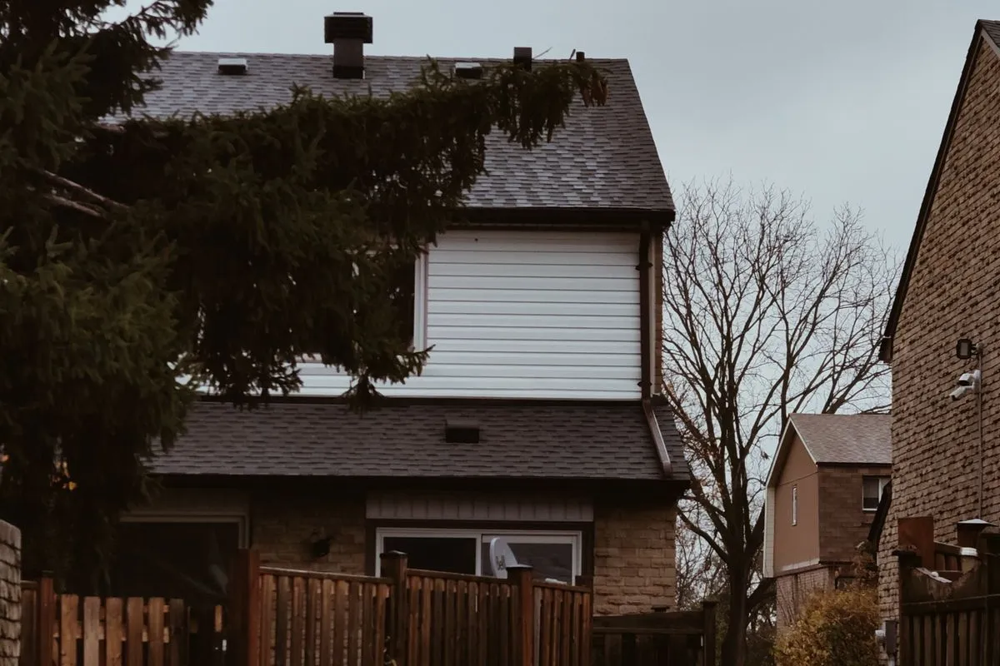

By Reno Rise. Published September 22, 2026. Last updated September 22, 2026. General planning information, not legal or engineering advice.

Basement walkout construction means cutting a new below-grade entrance into the foundation, usually with a stairwell and drainage, so the basement has its own door to the outside. It is one of the more structural basement projects there is: one wall now has an opening where load used to be carried, so it needs engineering, not just excavation. Here is what the process actually involves, in Toronto.
What Basement Walkout Construction Is
A walkout replaces a section of foundation wall with a doorway, stairwell and drainage system, giving the basement a direct, grade-level exit instead of only the interior stairs. Done well, it also brings in daylight through a full-height door rather than a small window. Done badly, it brings in water, which is the entire reason this is a specialist’s project and not a weekend one. It is one part of a larger project; see basement renovation steps in order for where it fits alongside framing, electrical and the rest.
It is different from a walk-up basement, where an existing grade change already lets a door sit close to ground level, and different again from a daylight basement, where the wall is exposed above grade but there is no separate door. A true walkout means a new opening, cut specifically for the purpose, with a stairwell built to carry people and shed water at the same time.
What a Walkout Actually Changes
- A second, independent exit. Useful on its own, and often required for a legal secondary suite.
- Real daylight. A full-height door lets in far more light than a small basement window ever will.
- Usable outdoor connection. A basement with its own door to a patio or yard functions differently than one accessed only through the house.
- Resale flexibility. A basement with an independent entrance is easier to market as a rental or in-law suite later, even if that is not the plan today.
None of that is free, and it is not supposed to be. This is structural work with a permit attached, not a weekend project with a bigger door.
Lot and Site Requirements

A sloped lot makes a walkout simpler, because part of the foundation is already closer to grade. On a flat lot, the same result usually means more excavation, a full stairwell down to the door, and more drainage to manage. Soil type, groundwater and how close the property line sits to the new stairwell all factor into what a designer will recommend for your house specifically.
A stairwell close to a property line can also need a retaining wall or a City setback review, and a fence, deck or mature tree in the way can turn a straightforward dig into a more careful one. None of this is a reason to skip a walkout. It is a reason to have a designer look at the actual lot before anyone quotes a number.
How the Construction Process Works
- Engineering and drawings, since the opening removes load-bearing wall and needs a designed lintel and support.
- Excavating the stairwell and exposing the section of foundation being cut.
- Cutting the opening and framing the new doorway, with the lintel sized to the load above it.
- Waterproofing the exposed foundation and stairwell walls, and installing drainage at the base of the stairwell so it does not become a bathtub.
- Installing the door, finishing the stairwell, and restoring grading and landscaping around it.
That drainage step is not optional. A below-grade stairwell with nowhere for water to go is how a walkout turns into a basement flood with extra steps.
Permits and Who Is Responsible
Toronto Building lists constructing a basement entrance among the work that needs a building permit, and given the structural work involved, expect engineered drawings and inspections at more than one stage. As the property owner, compliance is yours even if a professional applies on your behalf, so get who does what in writing before excavation starts.
What Drives the Cost of a Walkout
Reno Rise does not publish price ranges for the same reason a single number never fits a walkout: the site decides most of the cost, not the finishes. Ask each quote to itemize:
- How much excavation the stairwell needs, and whether equipment access to the site is easy or tight.
- Engineering and stamped drawings for the new opening and lintel.
- Waterproofing and drainage for the stairwell, including where that water actually goes.
- The door itself, plus any framing, insulation and interior finishing around the new opening.
- Landscaping, grading and any retaining wall needed to restore the yard afterward.
A quote that skips straight to a number without asking about your lot’s slope or soil is a number without a foundation under it, so to speak. See basement renovation cost in Toronto for how these same drivers apply to a project as a whole.
How a Walkout Fits a Legal Secondary Suite
Ontario's guide to second units describes a separate entrance as one of the requirements for a legal secondary suite, and a walkout is one common way to provide it without routing tenants through the main house. If a rental suite or an in-law unit is even a maybe, planning the walkout alongside the legal secondary suite guide from day one is far cheaper than adding one later.
Alternatives to a Full Walkout
Not every basement needs the full excavation-and-stairwell version. A window well and an egress window can satisfy a safe-exit requirement for a bedroom without a new door. A walk-up basement, where the grade already brings part of the wall close to the surface, can sometimes reach a similar result with less digging. So can a smaller side-entrance stairwell rather than a full patio-width walkout, if daylight matters less than the exit itself. A designer can tell you which one your lot actually supports before anyone quotes the expensive version.
Questions to Ask Before You Hire

- Who is the engineer of record for the lintel and opening, and can I see the stamped drawings?
- How will the stairwell drain, and what happens to that drain in a heavy storm?
- Who applies for the permit and books each inspection?
- What happens to the landscaping, fence or property line near the new stairwell?
Picture the result: a basement with its own front door, real daylight, and a stairwell that has never once needed to be pumped out. That is what the questions above are protecting.
General information, not legal or engineering advice. Confirm your project with Toronto Building and a qualified designer or contractor. Reno Rise does not issue permits or give code advice.
Frequently asked questions
What is a walkout basement?
A walkout basement has its own grade-level entrance, usually a stairwell and door cut into the foundation, instead of relying only on interior stairs. It typically also brings in more natural light.
Does every lot support a basement walkout?
No. Sloped lots make it easier because part of the foundation already sits closer to grade. A flat lot can still support one, but usually needs more excavation and drainage work.
Do I need a permit for basement walkout construction in Toronto?
Yes. Toronto Building lists constructing a basement entrance among the work that needs a building permit, and the structural nature of the opening usually means engineered drawings and inspections.
Does a walkout basement count toward a legal secondary suite?
Ontario’s guide to second units describes a separate entrance as a requirement for a legal secondary suite, and a walkout is one common way to provide it. Confirm the rest of the requirements with the ‘legal secondary suite guide’ below.
What is the difference between a walkout and an egress window?
A walkout is a full doorway and stairwell, built for daily use as an entrance. An egress window is a large enough window for emergency exit and daylight, without a full door. Which one you need depends on the room’s use.
How does drainage work for a basement walkout stairwell?
A properly built stairwell has drainage at its base so rain and melt do not collect against the new door. Ask each professional how theirs drains before you approve the design.
Request a Basement Assessment
Share a few details about your basement and your plans. Reno Rise reviews what you send and matches your project with the contractor best suited to the work. This does not confirm an appointment, a quote or an approval.